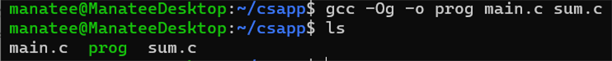
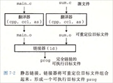
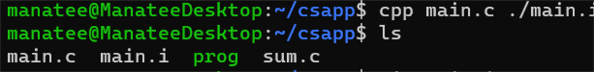
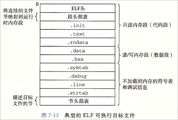
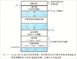
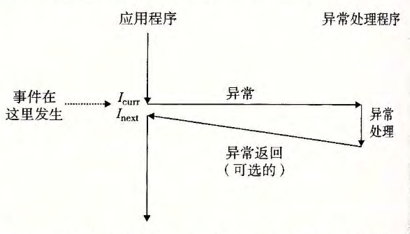
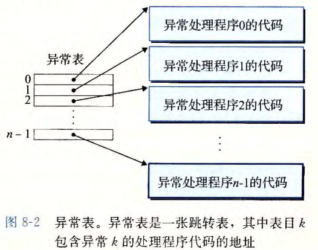
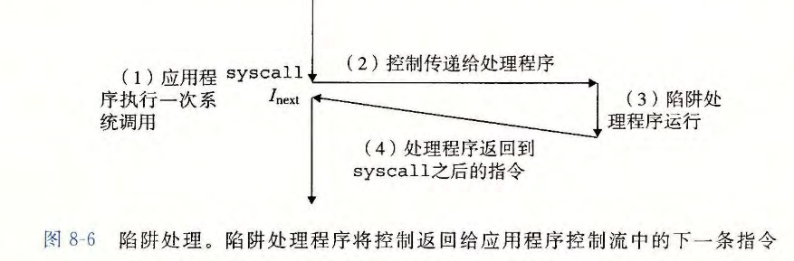
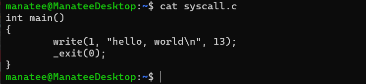
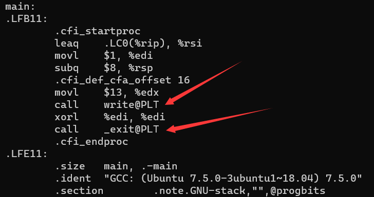

深入理解计算机系统部分读书笔记
第七章 链接
链接是将代码和数据片段组合成一个单一文件的过程，这个文件可以被load到内存并执行。
链接使得分离编译成为可能，将大型应用程序分成多个小的模块，当更改其中一个小模块时，只需要重新编译它，再链接，而不必去编译其他文件。
编译器驱动程序包括了预处理器、编译器、汇编器和链接器。它将ASCII码源文件翻译成可执行目标文件。


预处理器cpp将main.c翻译成一个ASCII码的中间文件main.i。

我们打开main.i文件看看
1 | # 1 "main.c.test" |
我在main.c.test里面include了stdio.h，经过cpp预处理器处理，可以看到它给源文件前面加了好多信息，还将stdio.h文件内容也添加了进来，生成了ASCII码的main.i文件。
接下来我们将main.i文件用gcc编译器编译生成汇编语言文件main.s：
1 | manatee@ManateeDesktop:~/csapp$ gcc -S main.i |
接下来用as汇编器，将main.s翻译成可重定位目标文件main.o，再用ld连接器将目标文件组合形成可执行目标文件prog：
1 | manatee@ManateeDesktop:~/csapp$ as -o main.o main.s |
shell调用操作系统中的loader函数，将可执行文件prog中的代码和数据复制到内存，然后执行它。
目标文件
- 可重定位目标文件：包含二进制代码和数据，可在编译时与其他可重定位目标文件合并，形成一个可执行目标文件。
- 可执行目标文件：包含二进制代码和数据，可被加载到内存执行。
- 共享目标文件：特殊可重定位目标文件，可在加载时或运行时被动态加载到内存并链接。
各个系统目标文件格式不同，x86-64Linux和Unix使用的格式为ELF。

- .text：代码
- .rodata：只读数据
- .data：初始化的全局和静态变量。局部变量在运行时被保存在栈中，并不在.data和.bss中
- .bss：未初始化的全局和静态变量、被初始化为0的全局和静态变量。这在目标文件中不占用空间，在运行时才会给变量分配内存，初始值为0
- .symtab：符号表
每个可重定位目标文件包含一个符号表，其中符号表包含了3中不同符号：
- 被该文件定义和引用的全局符号：该文件中定义的全局函数和非静态全局变量
- 引用其他目标文件的全局符号：其他文件中定义的全局函数和非静态全局变量
- 该文件定义和引用的局部符号：static修饰的变量和函数，这些可被该目标文件使用，但不能在其他目标文件中被引用。
链接器解决多重定义的全局符号
如果多个目标文件定义了同名的全局符号，链接器如何区分？根据以下规则：
函数和初始化的全局变量是强符号，未初始化的全局变量是弱符号。
- 不能定义多个同名强符号
- 一个强符号和多个弱符号同名，就选择强符号
- 多个弱符号同名，就任选一个。
举例来说：
1 | /* foo1.c */ |
由于强符号f被定义了2次，编译和链接这两个文件时会出错。
1 | /* foo1.c */ |
同理，上面也行不通。再看一个下面的例子：
1 | /* foo1.c */ |
这次可以通过编译，链接器会选择foo1.c中的强符号x。
链接静态库
将相关的目标文件打包成一个单独的文件就形成了静态库，当链接器链接静态库时，它只复制应用程序引用的静态库中的模块，未引用的不会复制，这减少了可执行文件的占用空间。Linux静态库以.a结尾标识。
下面用addvec.c和multvec.c创建了一个静态库libvector.a，并使用这个库：
1 | manatee@ManateeDesktop:~/csapp$ gcc -c addvec.c multvec.c |
1 | /* addvec.c */ |
链接器在链接时会从静态库libvector.a中复制引用的addvec.o模块到可执行文件，printf.o模块同理，程序并未使用multvec.o定义的符号，链接器就不会复制它。
重定位
链接器完成符号解析后就把每个模块中每个符号引用与它的定义相关联。
- 重定位节和符号定义。将类型相同的节，如每个模块的.data节合并成为一个新的.data节。将运行时内存地址设置给新的节和每个符号。这样每条指令和全局变量就有唯一的运行时内存地址了。
- 重定位节中的符号引用。修改代码和数据节中对每个符号的引用，使之指向正确的运行时地址。
重定位完后，形成可执行目标文件，它连续的片被映射到连续的内存段。

加载器通过目标文件头部表中的信息将进程虚拟地址空间中的页映射到可执行文件中页大小的片，新的代码段和数据段被初始化为可执行文件的相应段，然后加载器跳转到_start地址，它最终调用main函数，除了头部表的一些信息，加载过程中没有任何从磁盘到内存的数据复制。知道CPU引用一个被映射的虚拟页时才会复制相应页面到内存。
动态链接共享库
静态库的一些代码会被复制到每个引用它的运行的进程中，而动态库不同，它在运行或加载时，可以通过动态链接器加载到进程的任意内存地址，在Linux中以.so结尾的文件表示。所有引用一个.so动态库的可执行目标文件共享这个.so文件中的代码和数据。静态库则是每次链接都需要复制代码和数据。共享库的.text节可以被多个运行的进程共享
第八章 异常处理流
一段连续处理器指令的地址序列成为控制流（控制转移序列），就是一个接一个执行指令。操作系统使用异常控制流ECF（控制流突变，也就是指令跳转执行）对一些系统状态的变化做响应。应用程序使用陷阱（trap）或者系统调用的ECF形式，向操作系统请求服务。
软件异常允许程序进行非本地跳转（违反通常的栈规则）来响应错误，属于应用层ECF，如C++的try catch。
异常
控制流的突变，响应处理器状态的变化（事件）。简单来说就是跳到别的地址去执行指令，返回来是可选的。如图：

当处理器检测到事件时，就会进行一个间接过程调用，通过异常表和事件对应的编号，来执行这类事件的异常处理程序。处理完后，有以下选择：
- 返回被中断的指令，并重新执行它
- 返回被中断的指令的下一条指令
- 终止被中断的进程
异常处理
每种类型异常分配一个异常号。操作系统启动时初始化异常表。

- 在执行间接过程调用时，转入异常处理程序之前，处理器在栈中压入返回地址和处理器状态，如果控制是从用户态转移到内核态，就会被压入内核栈。
- 异常处理程序运行在内核态。
- 执行完毕后，执行中断返回指令，该指令恢复处理器状态，将控制权交给被中断的进程。
异常类别
- 中断：异步发生的硬件中断，处理外设I/O信号的结果，执行中断处理程序。
- 陷阱和系统调用：同步发生，是执行当前指令所产生的结果。应用程序执行
syscall n指令请求对应的内核服务。（执行该指令会导致一个到异常处理程序的陷阱，该处理程序解析参数，调用适当内核服务程序）系统调用运行在内核模式。 - 终止：同步发生，调用
abort终止进程。

- 故障：出现错误，可能被故障处理程序修复。若能修复就返回去重新执行引起故障的指令；否则调用
abort终止进程。
典型例子：缺页异常（page falt）
指令引用了一个物理页面不在内存中的虚拟地址，缺页处理程序从磁盘加载对应页面到内存，然后重新执行引起缺页错误的指令。
Linux系统调用
每个系统调用有唯一系统调用号，这对应到内核中的跳转表的偏移量。
标准C库提供的包装函数如：read、write等。它们打包参数，并调用syscall n指令陷入内核，去执行系统调用，然后将返回值传递回来。
所有Linux系统调用的参数通过寄存器传递而不是栈。
举例：
一个c源程序

对应的汇编文件

进程
进程上下文由程序运行所需的状态组成，包括：
- 代码段、数据段、堆、栈。
- 寄存器内容、程序计数器。
- 环境变量。
- 打开文件描述符。
- 等等。
进程提供了两个抽象：
- 独立的逻辑控制流
- 私有的地址空间
用户模式和内核模式
CPU使用控制寄存器的一个模式位来区分。用户程序必须使用系统调用接口间接访问内核代码和数据。进程从用户模式变为内核模式的唯一方法是通过中断、故障或陷入系统调用这样的异常。在异常处理程序中，CPU将用户模式变为内核模式。
proc文件系统
存放内核数据结构的相关信息如：进程使用的内存段(/proc/
上下文切换
内核使用上下文切换的异常控制流实现多任务。内核为每个进程维护上下文，就是重新启动被抢占进程所需的状态。包括程序计数器、寄存器、用户栈、内核栈和各种内核数据结构，比如描述地址空间的页表、进程表、打开文件表等。
切换步骤：
- 保存当前进程上下文。
- 恢复之前被抢占进程的上下文。
- 将控制传递给恢复进程。